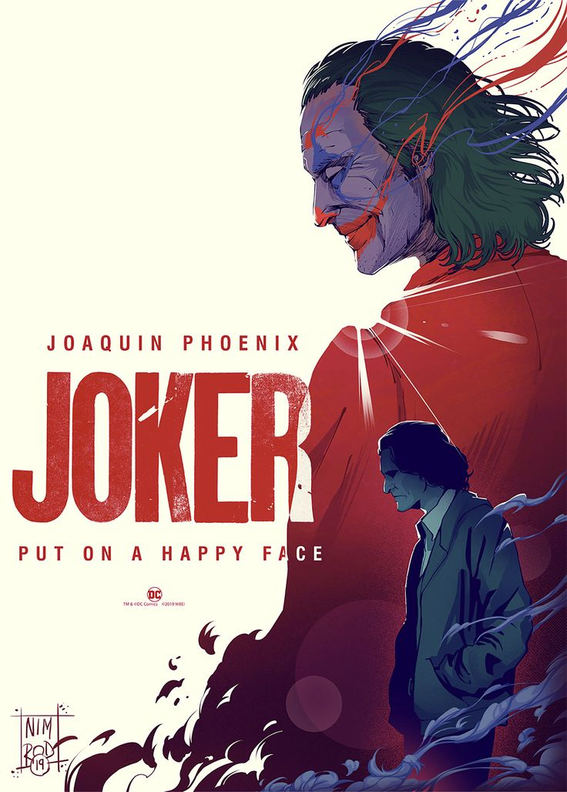

JOKER
MAIN CAST
Main Actors: Joaquin Phoenix, Robert De Niro, Zazie Beetz
AGE RESTRICTION
Age Restriction: R
SHOWING TIME
Joker: 12:15 PM 3:15 PM 6:15 PM 9:15 PM
SYNOPSIS
Synopsis: "Joker" is a dark and gritty psychological thriller that explores the origins of one of the most iconic comic book villains. Joaquin Phoenix delivers a mesmerizing performance as Arthur Fleck, a failed stand-up comedian struggling to find his place in a fractured society. Set in Gotham City during the 1980s, the film follows Arthur's descent into madness as he grapples with mental illness, societal neglect, and a series of personal tragedies. Bullied, marginalized, and disregarded by society, Arthur transforms into the anarchic and nihilistic criminal mastermind known as the Joker. Robert De Niro portrays Murray Franklin, a late-night talk show host who becomes entangled in Arthur's twisted psyche. Zazie Beetz plays Sophie Dumond, Arthur's neighbor and love interest, whose presence offers a fleeting glimpse of normalcy in his chaotic world. "Joker" is a haunting exploration of the human condition, delving into themes of alienation, identity, and the thin line between sanity and madness.